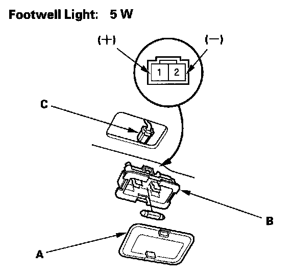

Footwell Light Test/Replacement
Footwell Light Test/Replacement
1. Carefully pry out the footwell light lens (A) and housing (B).
2. Disconnect the 2P connector (C) from the light.
3. Check for continuity between the No. 1 (+) and No. 2 (-) terminals. There should be continuity. If there is no continuity, check the bulb(C). If the bulb is OK, replace the footwell light.
4. Install in the reverse order of removal.